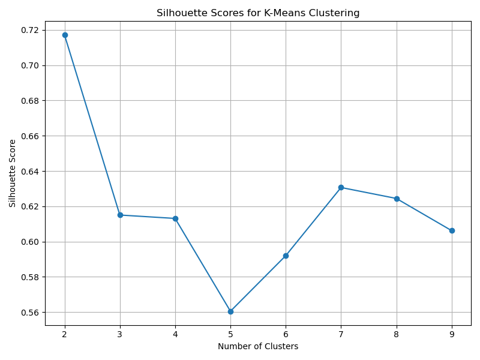
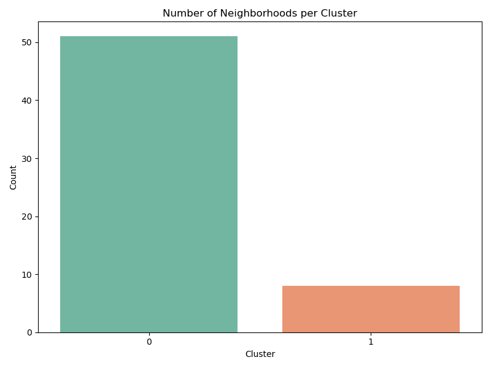
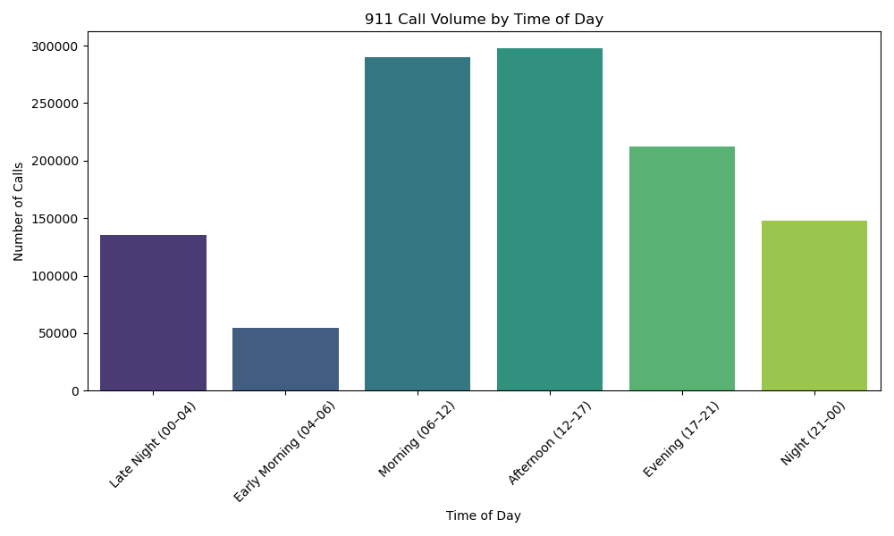
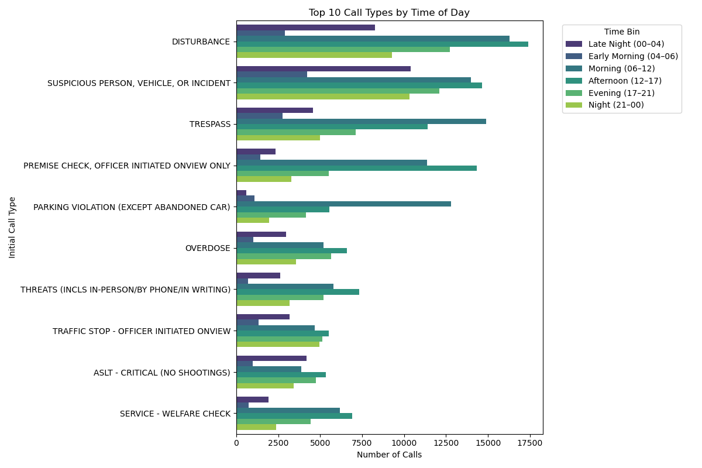
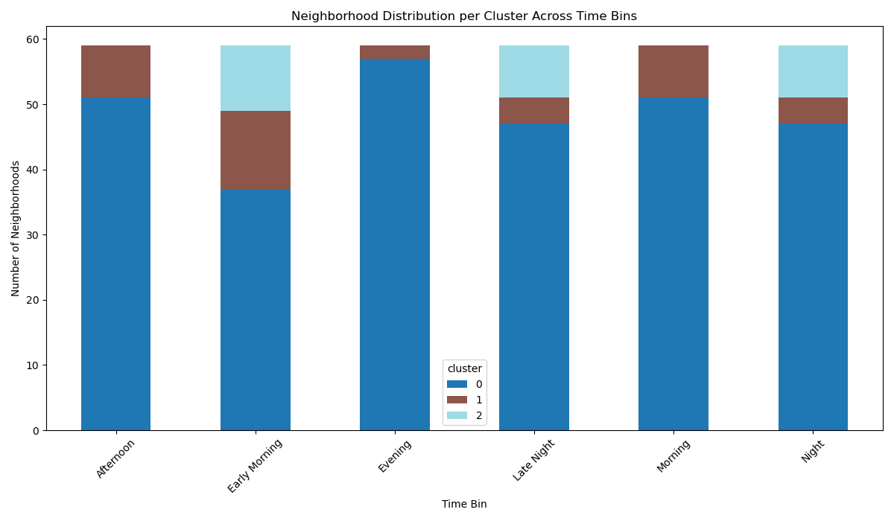

Seattle 911 Call Analysis Report
Objective
This project aims to explore, cluster, and analyze Seattle 911
call data across neighborhoods and times of day. The goal is to
identify spatial and temporal patterns in emergency response
activity that can support public safety decision-making.
Data Sources & Preprocessing
We merged 911 call records with NOAA weather data and geospatial
boundary data for Seattle neighborhoods. The dataset was
cleaned, parsed for timestamps, and enhanced with engineered
features like call type frequency and time-of-day bins.
-
Primary dataset: Seattle 911 calls with 50+
fields
-
Weather: NOAA daily summaries (temperature,
precipitation, wind)
-
Spatial boundaries: Seattle Dispatch
Neighborhoods GeoJSON
Spatial Clustering Analysis
1. K-Means Clustering
K-means was applied to a feature matrix capturing call counts
and priority levels per neighborhood. The silhouette score was
used to determine the optimal number of clusters.


CSV summary: output/kmeans_cluster_summary.csv
2. PCA + K-Means
Dimensionality reduction using PCA helped identify structure in
the feature space. K-means clustering followed, producing
clearer groupings.
3. HDBSCAN Clustering
HDBSCAN detected dense clusters and identified outliers (cluster
-1). This approach was more flexible than K-means and worked
well for uneven neighborhood distributions.
4. Gaussian Mixture Model (BIC)
We applied BIC scoring to automatically determine the best
number of Gaussian clusters. The resulting clusters provided
probabilistic interpretations.

CSV summary: output/gmm_bic_cluster_summary.csv
Temporal Analysis
Time-of-Day Binning
Calls were categorized into six bins: Late Night (00–04), Early
Morning (04–06), Morning (06–12), Afternoon (12–17), Evening
(17–21), Night (21–00).


Time-Aware KMeans Clustering
KMeans clustering was performed separately for each time bin.
Each map shows clusters of neighborhoods based on call volume
and average priority during that bin.

Summary:
output/time_bin_clustering/time_bin_cluster_profile.csv
Cluster Transitions
The table below shows how neighborhoods transition across
clusters between time bins.
See CSV:
output/time_bin_clustering/time_bin_cluster_transitions.csv